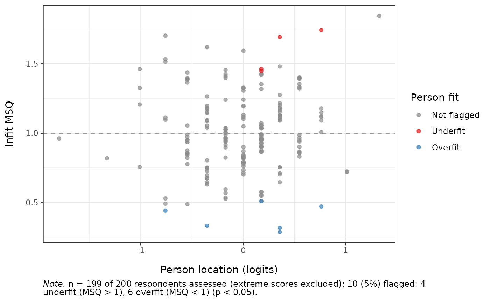

Computes per-respondent person-fit statistics and resampling-based p-values. Three statistics are reported: conditional infit and outfit mean-squares (MSQ) – the magnitude (effect-size) measures familiar from Rasch analysis – and the standardized log-likelihood statistic lz. The conditional MSQ statistics use response probabilities conditional on the total score, which require no person estimate and are therefore unbiased (Kreiner & Christensen, 2011); they are computed on each person's observed response pattern, so partial missingness is handled directly.
Usage
RMpersonFit(
data,
statistics = c("infit", "outfit", "lz"),
estimator = c("CML", "MML"),
theta_method = c("WLE", "EAP"),
iterations = 500L,
flag_alpha = 0.05,
flag = c("both", "underfit"),
zstd = FALSE,
parallel = FALSE,
n_cores = NULL,
seed = NULL,
output = c("kable", "dataframe", "ggplot", "list")
)Arguments
- data
A data.frame or matrix of item responses. Items must be scored starting at 0 (non-negative integers). Missing values (
NA) are allowed.- statistics
Character vector. Which statistics to report; any of
"infit","outfit","lz". Defaults to all three.- estimator
Character. How item parameters are estimated:
"CML"(default) or"MML"(via mirt).- theta_method
Character. Person-location estimator used for the lz statistic:
"WLE"(default) or"EAP". Ignored if"lz"is not requested.- iterations
Integer. Number of Monte-Carlo replications per person.
0skips resampling and returns statistics only. Default500.- flag_alpha
Numeric in (0, 1). Significance level for the
flaggedcolumn and the plot highlighting. Default0.05.- flag
Character. Which misfit direction drives flagging for the MSQ statistics:
"both"(default) flags either direction with a two-sided p-value;"underfit"flags only underfit (MSQ > 1, noisy responding) with a one-sided upper p-value, which is more powerful for detecting it and ignores (benign) overfit. The reportedp_infit/p_outfitfollow this choice. lz is one-sided regardless. Overfit can occasionally be suspicious (e.g. fabricated or copied response patterns), so"both"is the default.- zstd
Logical. If
TRUE, also report the Wilson-Hilferty standardized (ZSTD) versions of the MSQ statistics. These are provided only as a familiar cross-person comparability metric and are not used for inference (see Müller, 2020). DefaultFALSE.- parallel, n_cores
Logical / integer. Parallelise the resampling across persons via mirai when available. Default sequential.
- seed
Optional integer for reproducible resampling.
- output
Character.
"kable"(default),"dataframe","ggplot", or"list". For"ggplot", a named list of person-fit maps is returned – one per requested statistic (e.g.$infit,$outfit,$lz) – each plotting the statistic against person location, with respondents flagged by that statistic highlighted and a caption reporting the assessed sample size and the proportion flagged. For the MSQ maps the flagged count is split into underfit (MSQ > 1, noisy/erratic responding) and overfit (MSQ < 1, overly deterministic responding).
Value
For output = "dataframe", a data.frame with one row per respondent
(input order): id, n_answered, sum_score, the requested
statistics (infit_msq, outfit_msq, lz), their resampled
p-values (p_infit, p_outfit, p_lz) when iterations > 0,
flagged, and – if zstd = TRUE – infit_zstd, outfit_zstd.
The flagged column is TRUE when the marginal (uncorrected) p-value of
any requested statistic is below flag_alpha for that respondent; it
is therefore a per-person screening flag, not corrected for the number of
respondents tested (so under fit expect about flag_alpha of respondents
to be flagged by chance). Each output = "ggplot" map instead colours and
counts respondents flagged by its own statistic alone. Extreme scorers
(minimum or maximum possible given the items they answered) receive NA
statistics and are not assessed. For output = "kable" the same content as
a knitr_kable; for output = "ggplot" the named list of maps described
under that argument; for output = "list", a list with both views from a
single computation: fit (the data.frame) and plots (the named list of
maps).
Details
Statistical significance is assessed by Monte-Carlo resampling under the fitted model rather than by an assumed asymptotic distribution. The asymptotic null distributions of MSQ and lz are known to be unreliable – the Wilson-Hilferty (ZSTD) transformation of MSQ in particular adds nothing once conditional estimation is used (Müller, 2020) – so resampling provides the valid reference (Sinharay, 2016).
Conditional MSQ. For person \(v\) with answered items \(A_v\) and total score \(r_v\), the conditional residual is \(z_{vi} = (x_{vi} - E(X_{vi} \mid R_v = r_v)) / \sqrt{\mathrm{Var}(X_{vi} \mid R_v = r_v)}\), with conditional moments obtained from elementary symmetric functions of the answered items' parameters. Outfit is the unweighted mean of \(z_{vi}^2\); infit is the information-weighted mean. Because the conditional moments use only item parameters, no (biased) person estimate enters the residual.
Interpreting MSQ direction. Values near 1 indicate fit. MSQ > 1
(underfit) means the responses are noisier / more erratic than the
model expects – the validity-relevant direction, indicating careless or
aberrant responding. MSQ < 1 (overfit) means responses are overly
deterministic (Guttman-like); usually benign for score validity, though a
suspiciously perfect pattern can occasionally signal copied or fabricated
data. Use flag = "underfit" to flag only the former. lz is one-sided:
low (negative) values flag the aberrant (underfit-like) direction.
lz. The standardized log-likelihood of the response pattern evaluated at the estimated person location (Drasgow, Levine & Williams, 1985); small (negative) values indicate misfit. Because the location is estimated rather than known, the variance of lz is below 1 and its asymptotic standard-normal null is invalid, which makes a naive test conservative (Snijders, 2001; Sinharay, 2016). Instead of applying the analytic lz\* standardization – derived by Snijders (2001) for dichotomous items and extended to polytomous / mixed-format items by Sinharay (2016, 2026) – easyRasch2 obtains the reference distribution by resampling with the person location re-estimated for every simulated pattern (see Resampling). This reproduces the ability-estimation effect and is the resampling analogue of lz\*, so the resampled p-value is well calibrated.
Resampling. Each statistic is referenced against the null that
matches it, removing the need to choose a scheme. The conditional MSQ
statistics use patterns sampled conditional on the person's total
score – the exact Rasch-native null, requiring no person estimate and
fully consistent with the (conditional) statistic. lz, which is defined at
the estimated location, uses patterns simulated at that location and then
scored with the location re-estimated from each simulated pattern, so the
null carries the same ability-estimation effect as the observed lz (for a
Rasch / PCM model the location is a function of the total score, so this
re-estimation is a cheap score-based lookup). Both schemes are computed per
person over the items actually answered, so partial missingness is handled
by either. The p-value is the proportion of the iterations replicates at
least as extreme as the observed value. This follows the resampling-based
person-fit approach (Sinharay, 2016) and the bootstrap recommendation of
Müller (2020).
References
de la Torre, J., & Deng, W. (2008). Improving person-fit assessment by correcting the ability estimate and its reference distribution. Journal of Educational Measurement, 45(2), 159-177. doi:10.1111/j.1745-3984.2008.00058.x
Drasgow, F., Levine, M. V., & Williams, E. A. (1985). Appropriateness measurement with polychotomous item response models and standardized indices. British Journal of Mathematical and Statistical Psychology, 38(1), 67-86. doi:10.1111/j.2044-8317.1985.tb00817.x
Kreiner, S., & Christensen, K. B. (2011). Exact evaluation of bias in Rasch model residuals. Advances in Mathematics Research, 12, 19-40.
Müller, M. (2020). Item fit statistics for Rasch analysis: can we trust them? Journal of Statistical Distributions and Applications, 7(5). doi:10.1186/s40488-020-00108-7
Sinharay, S. (2016). Assessment of person fit using resampling-based approaches. Journal of Educational Measurement, 53(1), 63-85. doi:10.1111/jedm.12101
Sinharay, S. (2016). Asymptotically correct standardization of person-fit statistics beyond dichotomous items. Psychometrika, 81(4), 992-1013. doi:10.1007/s11336-015-9465-x
Sinharay, S. (2026). Refining the asymptotically correct standardization of person-fit statistics for mixed-format tests. British Journal of Mathematical and Statistical Psychology. doi:10.1111/bmsp.70049
Snijders, T. A. B. (2001). Asymptotic null distribution of person fit statistics with estimated person parameter. Psychometrika, 66(3), 331-342. doi:10.1007/BF02294440
Examples
# \donttest{
set.seed(1)
dat <- as.data.frame(
matrix(sample(0:2, 200 * 8, replace = TRUE), nrow = 200, ncol = 8)
)
colnames(dat) <- paste0("Item", 1:8)
# Conditional infit/outfit MSQ + lz with resampled p-values
RMpersonFit(dat, iterations = 200, output = "dataframe") |> head()
#> id n_answered sum_score infit_msq outfit_msq lz p_infit p_outfit
#> 1 1 8 5 1.3900179 1.3988496 0.06189744 0.3283582 0.3283582
#> 2 2 8 6 0.7271090 0.7334992 -0.06110551 0.3482587 0.3980100
#> 3 3 8 2 0.8184723 0.8471554 0.27470409 0.7960199 0.7960199
#> 4 4 8 10 0.7119447 0.6871710 0.42107989 0.2786070 0.1990050
#> 5 5 8 4 1.5137117 1.4541483 0.33920680 0.2288557 0.2288557
#> 6 6 8 4 1.5321777 1.4836487 0.29890695 0.1691542 0.1691542
#> p_lz flagged
#> 1 0.3383085 FALSE
#> 2 0.2935323 FALSE
#> 3 0.4527363 FALSE
#> 4 0.8208955 FALSE
#> 5 0.6467662 FALSE
#> 6 0.5721393 FALSE
# Person-fit maps: a named list with one plot per statistic
if (requireNamespace("ggplot2", quietly = TRUE)) {
plots <- RMpersonFit(dat, iterations = 200, output = "ggplot")
plots$infit # infit map (each plot's caption reports the % flagged)
}

# Flag only underfit (noisy responding), the validity-relevant direction
RMpersonFit(dat, iterations = 200, flag = "underfit",
output = "dataframe") |> head()
#> id n_answered sum_score infit_msq outfit_msq lz p_infit
#> 1 1 8 5 1.3900179 1.3988496 0.06189744 0.14427861
#> 2 2 8 6 0.7271090 0.7334992 -0.06110551 0.82089552
#> 3 3 8 2 0.8184723 0.8471554 0.27470409 0.43283582
#> 4 4 8 10 0.7119447 0.6871710 0.42107989 0.82089552
#> 5 5 8 4 1.5137117 1.4541483 0.33920680 0.09950249
#> 6 6 8 4 1.5321777 1.4836487 0.29890695 0.07462687
#> p_outfit p_lz flagged
#> 1 0.11940299 0.3432836 FALSE
#> 2 0.80099502 0.2736318 FALSE
#> 3 0.43283582 0.4427861 FALSE
#> 4 0.84577114 0.7960199 FALSE
#> 5 0.09950249 0.6965174 FALSE
#> 6 0.07462687 0.6368159 FALSE
# }